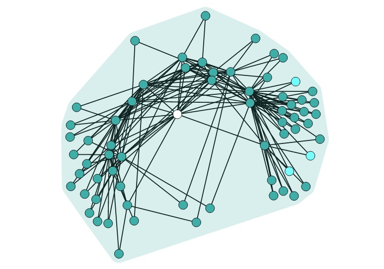
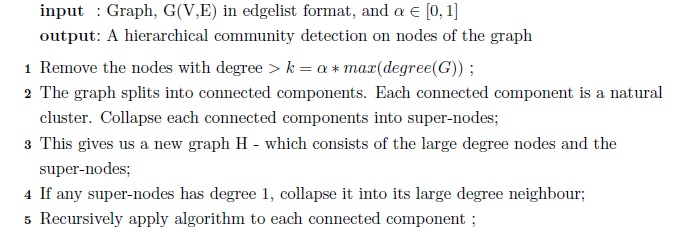
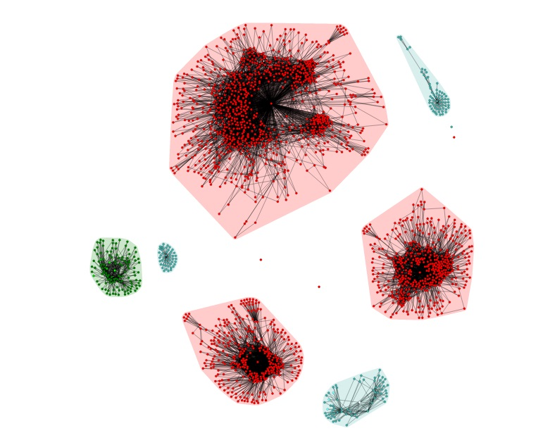

High On Graphs
 This project aimed at solving the problem of visualizing and querying large graph datasets.
Demo
After experimenting with existing community detection techniques like SNAP, METIS and iGraph, we came up with a Community Detection Algorithm based on influential nodes of the graph to hierarchically cluster it.
 Community Detection Algorithm ExplainedLooking at the limitations of state of the art visualizations viz. NodeXL and Gephi, we decided to come up with our own version of a browser-native visualization written in D3.js.
 Convex Hulls used in visualizing Clusters